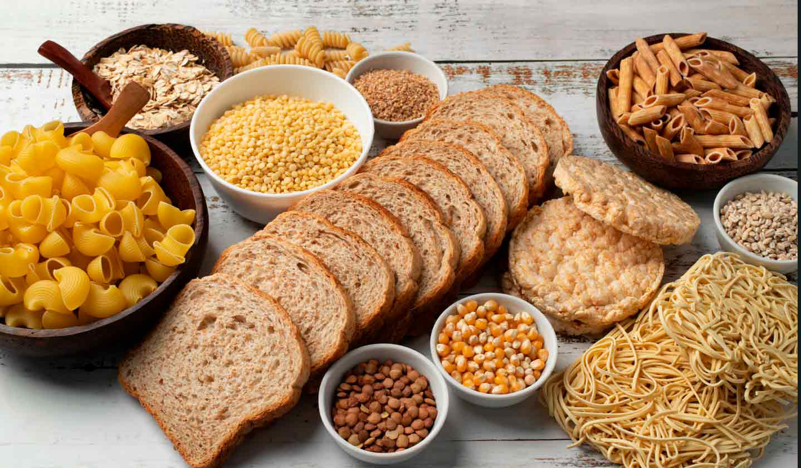
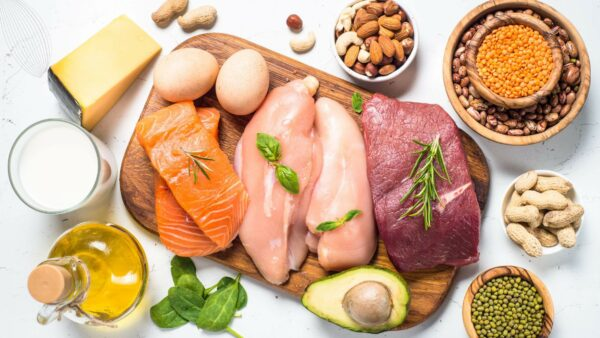

.png)
ALIMENTAÇÃO
MELHORE A SUA DIETA!
A nossa alimentação é uma base da nossa vida e não dar a atenção que ela precisa pode complicar sua saúde mental e física. Vamos explicar alguns conceitos para você poder organizar sua alimentação por conta própria caso não consiga contratar um especialista. Mas alertamos que a primeira opção deve ser procurar um especialista. Ele vai analisar seu caso e fazer o melhor plano pra você. Neste site contém informações gerais para quem quer se informar sobre uma alimentação saudável.
- Restições
Tópicos da página
-
Você precisa fazer testes sobre suas alergias e intolerâncias alimentares. Algumas pessoas têm perigosas reações a alguns tipos de comidas.
-
Intolerâncias X Alergias
-
Intolerâncias alimentares:
intolerância alimentar é uma reação corpo decorrente de uma deficiência nas enzimas responsáveis pela digestão, dificultando este processo. Os sintomas da intolerância alimentar podem aparecer assim que o alimento é ingerido ou podem demorar até 72 horas. Entre os principais sintomas, incluem-se: problemas digestivos, como refluxo gástrico, cólicas, diarreia, sensação de estufamento, dor de estômago, inchaço abdominal, vômito, gases e constipação; tontura, fadiga, fraqueza e apatia; dores na barriga e nas costas; dores de cabeça; vertigem; erupções cutâneas, urticária, coceira, eczema, entre outros. Os sintomas sempre variam de pessoa para pessoa e dependem do tipo da intolerância.
Alergias alimentares:
A alergia alimentar é uma reação do corpo modulada pelo sistema imunológico contra proteínas presentes em determinado alimento, reconhecidas pelo corpo como “ameaça ou inimigo”. Entre os principais sintomas da alergia alimentar, incluem-se: coceira e vermelhidão na pele; inchaço nos lábios, língua, rosto ou orelhas; placas avermelhadas e inchadas na pele; aftas; sensação de desconforto na garganta; edema de glote, nariz entupido e escorrendo; dores abdominais e excesso de gases; ardor e queimação ao evacuar; diarreia ou prisão de ventre; tosse, rouquidão e chiado no peito.
Restrições alimentares:
-
Hidratação
-
Hidratação deve ser sua primeira prioridade, especialmente se seus treinos durarem duas ou mais horas ou forem muito intensos. Regular a temperatura corporal é fundamental para poder manter a energia durante uma longa sessão e é algo que os atletas de resistência, em particular, devem ter em mente.
-
Carboidratos
-
Carboidratos são os próximos da lista durante uma sessão de treino longa ou cansativa. Nesses casos, é recomendável uma fonte imediata de combustível, e não algo que seu corpo tenha que se esforçar demais para metabolizar.
 -
Proteínas
- 
Proteína é uma consideração final a ser feita, e a ingestão deve ser baseada em suas metas. Para o atleta de resistência que faz longas sessões, a proteína durante o exercício pode ajudar a preservar a massa muscular. Para o atleta avançado que procura ganhar massa muscular, pode ser uma ótima maneira de aumentar a síntese proteica.